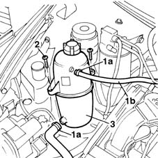
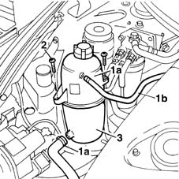

1088B10 engine cooling tank - r + r
- Path
- Procedures > 10 ENGINE UNIT > 1088 ENGINE COOLING > 1088B ENGINE COOLING RADIATOR > 1088B10 engine cooling tank - r + r
- Kind
- repair procedure (removal / refitting; the operation number is the code)
- Applies to
- all engines; all production periods
- Interactive page
- https://sloeber94.github.io/elrnDB-fMltpl/en/#/2891325
Applies to: engines: 1.6 16v; all production periods
 Removing
Removing
 Refitting
RefittingOpen the bonnet lid.
1. Open collars (1a) and disconnect engine coolant pipes (1b).
2. Undo the retaining bolts.
3. Remove the supply reservoir; collect residual water in a special tank.

Applies to: engines: 1.6 16v; all production periods
Refitting
RemovingCheck the condition of the supply reservoir.
Fit a supply reservoir and tighten both bolts.
Connect both pipes using new collars.
- 1088A10 Engine COOLANT - Check density' and top up level, if necessary
Applies to: engines: 1.9 JTD 8V; all production periods
Removing
RefittingOpen the bonnet lid.
1. Open collars (1a) and disconnect engine coolant pipes (1b).
2. Undo the bolts.
3. Remove the supply reservoir; collect residual water in a special tank.

Applies to: engines: 1.9 JTD 8V; all production periods
Refitting
RemovingCheck the condition of the supply reservoir.
Fit a supply reservoir and tighten both bolts.
Connect both pipes using new collars.
- 1088A10 Engine COOLANT - Check density' and top up level, if necessary